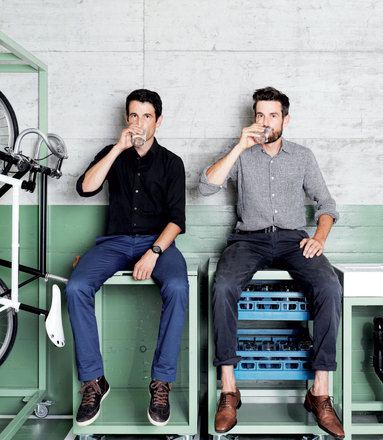
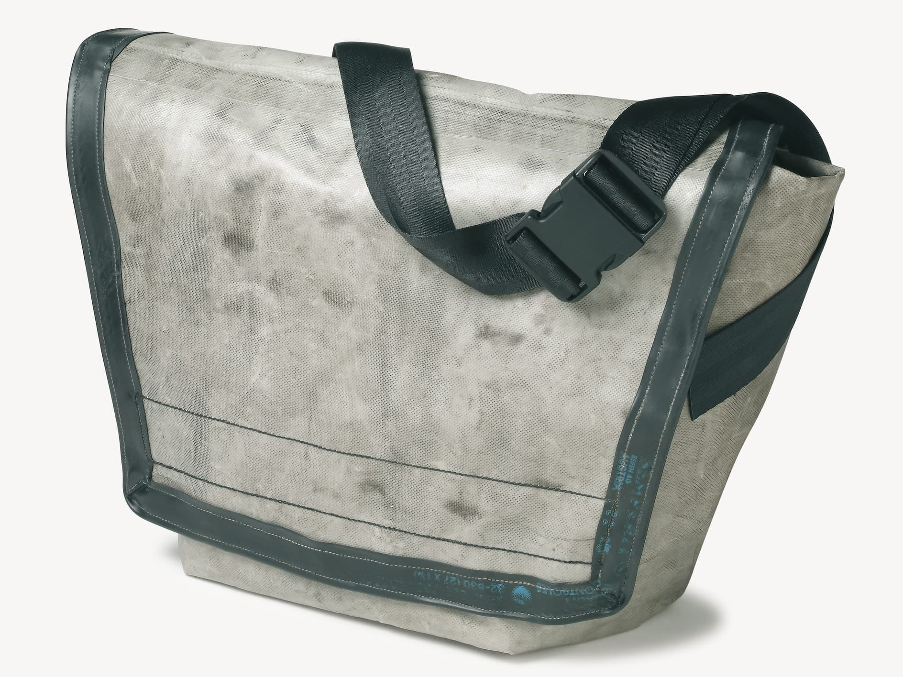

FREITAG 브랜드는 1993년 마커스 프라이탁과 다니엘 프라이탁 두 프라이탁 형제가 런칭한 업싸이클링 브랜드입니다.
여기서 업싸이클링( Up-cycling )이란?
재활용할 수 있는 옷이나 의류 소재 따위에 디자인과 활용성을 더하여 가치를 높이는 일
프라이탁 형제가 살고있는 '취리하'는 비가 자주 내리는 도시입니다.
디자인 전공 학교를 다니던 프라이탁 형제는 가방안에 있는 스케치북이 빗물에 자주 젖어 스트레스를 받던 중
길을 지나가는 트럭의 방수천을 보고 큰 감명을 받아 방수천을 이용하여 가방을 만들어봤습니다.

[실제 프라이탁 형제가 처음으로 만든 F13 Top cat 모델]
방수천으로 만든 가방을 학교에 가져가니 친구들의 반응은 매우 뜨거웠고,
프라이탁 형제는 업싸이클링을 기반으로 한 가방 브랜드를 만들기로 결심합니다.
프라이탁 가방은 트럭의 방수천, 자동차 안전벨트 , 폐자전거의 고무튜브를 이용하여 만들어집니다.
방수천을 사용하다보니 가방의 디자인이 모두 달라서
"세상의 단 1개뿐인 디자인"이라는 특징이 소비자들에게 매력으로 다가왔고,
프라이탁 형제는 다음과 같은 모토로 브랜드를 이끌어가고 있습니다.
" 친환경은 브랜드의 의무이자 철학이다 "